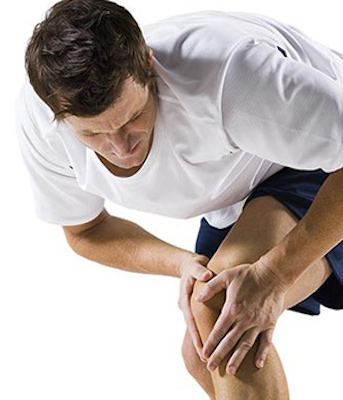

Knee
- Patellofemoral Pain
- Iliotibial Band Syndrome
- Chondromalacia
- Running Injuries
- ACL Reconstruction
- Meniscal Tears
- Ligament Injuries
- Muscle Strains
- Tendonitis
- Knee Osteoarthritis
- Knee Replacement
- Osteochondritis Dissecans
- Osgood-Schlatter Disease
- Baker's Cyst